Application Security
Requirements Generation
Adding security requirements earlier in the software development life cycle (SDLC) reduces security risks and costs compared to adding them later in the cycle.
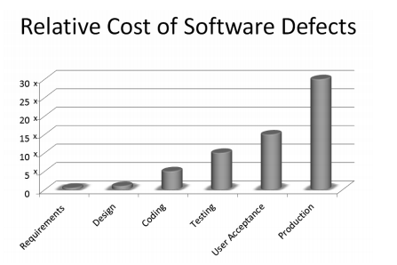
IEEE Standard 729 defines requirements as:
- A condition or capability needed by a user to solve a problem or achieve an objective.
- A condition or capability that must be met or possessed by a system…to satisfy a contract, standard, specification, or other formally imposed document.
Software security requirements fall into two categories.
First category consists of requirements for the software's security functions (such as cryptographic and user authentication functions).
The second is the software security requirements for the software's properties and behaviors.
The core security concepts (confidentiality, integrity, availability, authentication, authorization and auditing)
or CIA triad and AAA model are key to implementing secure requirements in any software development project.
- Confidentiality - how the system prevents the disclosure of information.
- Integrity - how the system protects data from unauthorized access.
- Availability - access to the system by authorized personnel.
-
Authentication - process of determining the identity of a user.
Three methods can be used to authenticate a user: Something you know (ex: password, pin code).
Something you have (ex: token, card). Something you are (ex: biometrics mechanisms).
- Authorization - process of applying access control rules to a user process to determine if a particular user process can access an object.
- Accounting (auditing) - records historical events on a system.
We use these core software security concepts to build out a security requirements matrix that includes general, operational, and other security requirements.
General:
- Session management - design and implementation of controls to ensure that the communications channels are secured from unauthorized access and disruption of communications.
- Exception management - the process of handling any errors that could appear during the system execution.
- Configuration management - identification and management of the configuration items (initialization parameters, connection strings, paths, keys).
Operational:
- Deployment Environment : Identify and capture pertinent requirements about the environment in which the software will be deployed.
- Archiving : Identify the regulatory and business requirement for business continuity.
- Anti-piracy : Identify requirements for code obfuscation, code signing, anti-tampering, and IP protection mechanisms.
Other:
- Sequencing and Timing : Identify sequencing and timing requirements to protect against race conditions of Time of Check/Time of Use (TOC/TOU) attacks.
- International : Factor in any international requirements that include both legal and technological requirements.
- Procurement : Evaluate and communicate requirements if purchased.
A typical application use system model is shown below.
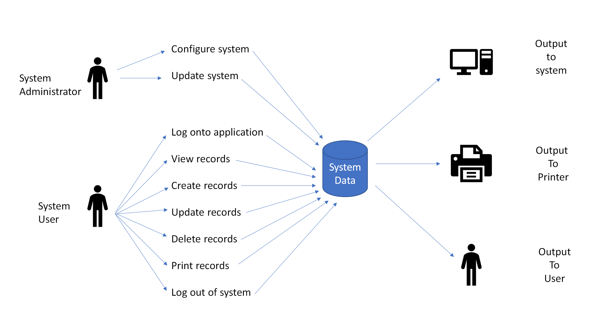
Each of the System User functions in the model have security needs.
Sometimes these needs can not be met for various reasons, and alternatives and risks have to be taken into consideration.
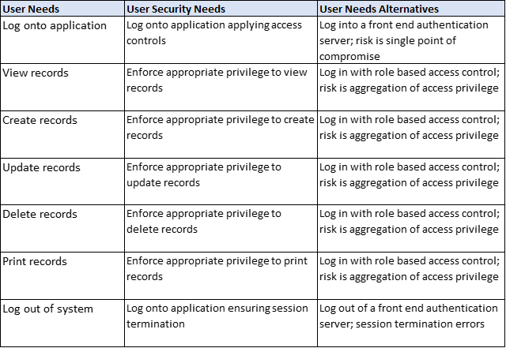
Once security needs are defined, the security requirment implementations can be defined for the system.
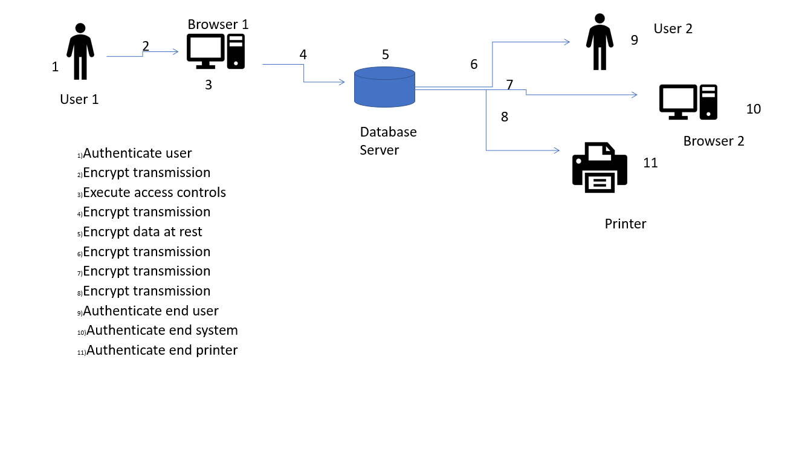
Each security requirement will need to be tested to see if its objectives are met.
Attack Surface Analysis
An attack surface analysis will enumerate exposures and vulnerabilities of an application.
Each potential attack point can be assigned a weight or risk score to determine priority of managing each weakness.
Tool : OWASP Attack Surface Detector Project
During application security testing, it is important to enumerate your application's attack surface. This project acts as an add-on to ZAP or Burp Suite to better identify
application attack surfaces. Spidering alone will often fail to identify unlinked endpoints and optional parameters. This tool figures out the endpoints of a web application,
the parameters these endpoints accept, and the data type of those parameters. This includes the unlinked endpoints a spider won't find in client-side code,
or optional parameters totally unused in client-side code.
The Attack Surface Detector uses static code analyses to identify web app endpoints by parsing routes and identifying parameters (with supported languages and frameworks).
This lab consisted of two Virtual machines, One running Ubuntu Desktop with ZAP installed and the other running Ubuntu Server
with the a vulnerable PHP/MySQL web application installed.
DVWA
This is an intentionally vulnerable web application that can be used for security testing purposes.
Open the OWASP ZAP application by either clicking the shortcut or by launching the application from terminal (Linux) using the commands below.
cd /usr/local/bin
./zap.sh
The IP address for server running DVWA is 192.168.1.101. Enter the IP Address and click Attack to begin analysis.
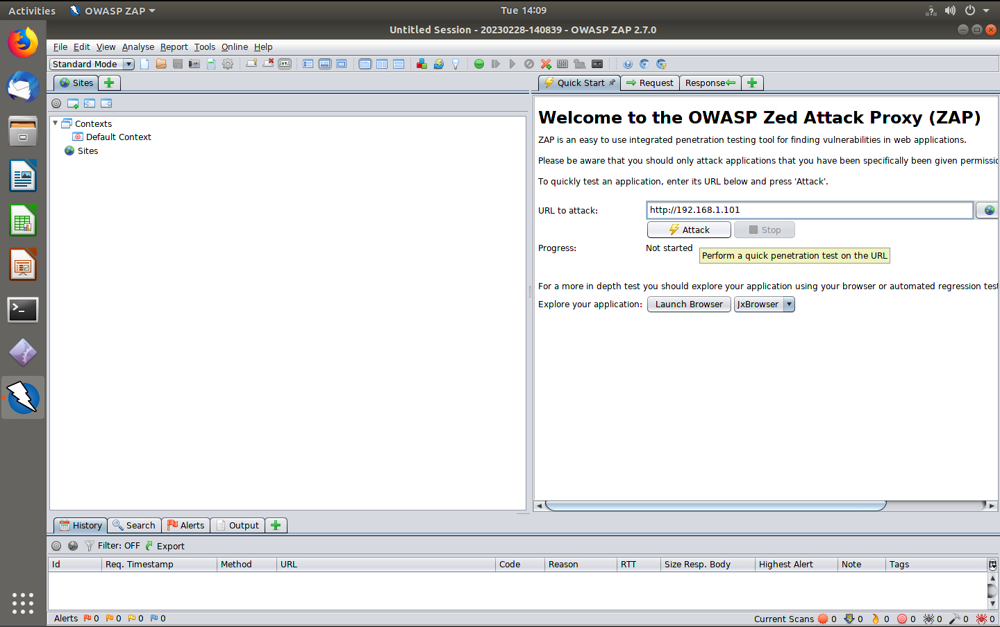
Clicking the Alerts tap in the lower left quadrant of the application will show findings and the associated risk levels
assigned to those findings. DVWA has numerous web application vulnerability risks such as directory traversal and non-HTTPOnly cookies (cross site scripting).
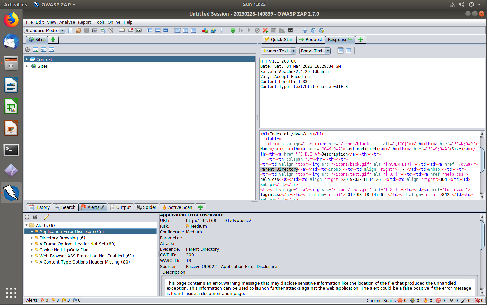
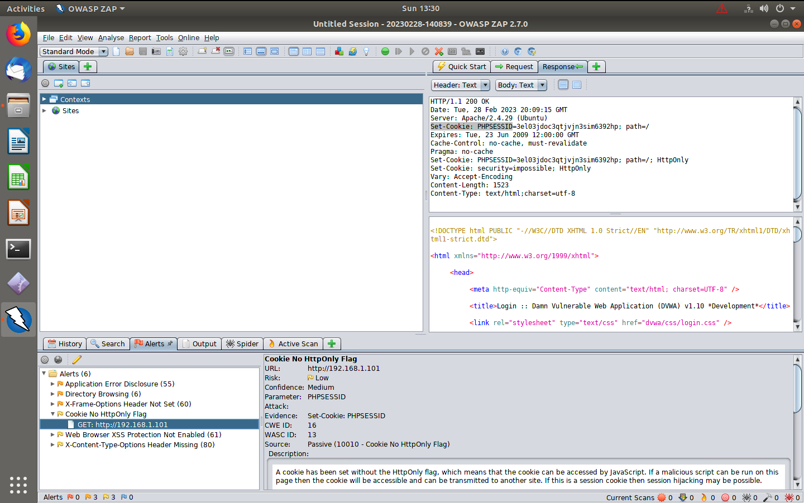
In order to quantify the attack surface, a few categories are defined below.
-
Identify Processes : An attack is a sequence of actions performed within required sets of conditions. Processes are actions that can be executed on a system.
Using the documentation previously provided and created, identify the processes, such as browsers, database servers, etc.
-
Identify Resources : A data resource contains information important to reaching a target or might be the target.
Using the documentation previously provided and created, identify the data resources such as files, directories, shares, databases, configuration files,
key stores, static and dynamic Web pages, audit logs, volatile and non-volatile memory, directory services, applications, services, device drivers, etc.
-
Identify Channels and Protocols : Attackers use channels and protocols to reach and manipulate processes and data resources.
They fall into two categories: message passing and shared memory. Using the documentation previously provided and created,
identify the message passing components that establish sessions between devices and successfully exchange packets.
The endpoints of message passing channels are processes.
Common channels and protocols include FTP, TCP, UDP, HTTP, streaming, RPC connections, named pipes, etc.
-
Identify Shared Memory : Using the documentation previously provided and created, identify the shared memory including system components that allow for the
storage and retrieval of information. This is considered shared memory and includes files, directories, registries, volatile memory, removable media, etc.
Using the subjects in the system model, a cross matrix was created to show how each category can be accessed by the subjects.
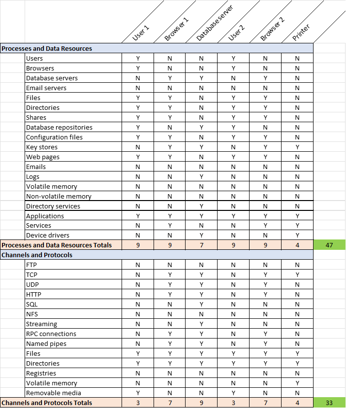
Total possible attack surface points was calculated to at least 80. The attack surface can be reduced by:
- Reducing number of components in a system.
- Hardening the system; closing unnecessary ports and services.
- Mitigating software coding vulnerabilities.
Recalculating the reduced attack surface shows 44 points, almost half of the original estimate.
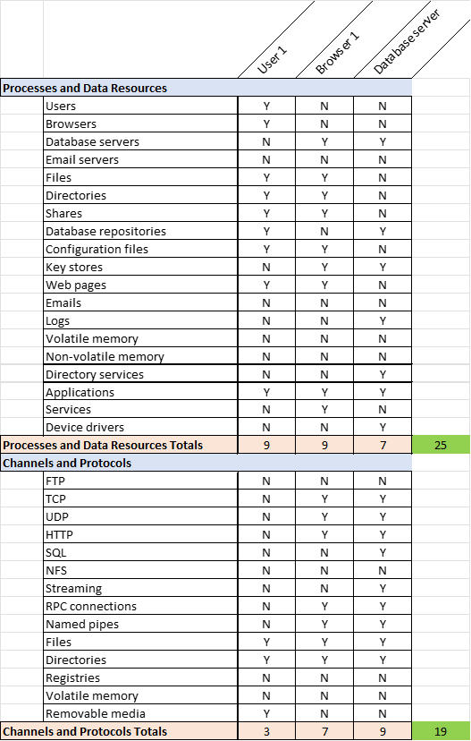
Abuse Cases
Use cases are scenarios of interaction between a system and its environment.
In regard to a use case, it is a scenario of a specific interaction between the system and particular actors.
Each use case will have a defined “success scenario” and with variations for exceptions. The actors in a use case are external entities and can be human or non-human.
Use cases are most often represented by UML diagrams as ovals that are connected to stick figures, which represent the external entities.
Use case diagrams are accompanied by documented use case descriptions that define how the actors and the system interact with one another.
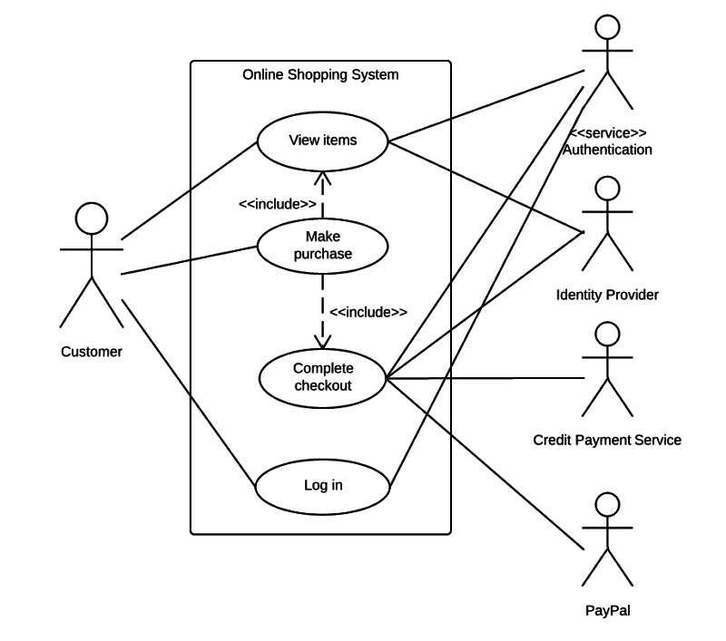
An abuse case is a use case where the outcome of the interaction negatively impacts the system, an actor, or a stakeholder of the system.
The negative impact can be considered an interaction that impacts security (CIA) or (AAA). Abuse cases differ from use cases in few major ways.
Abuse cases describe the scenarios less precisely as we don't always know the way in which an attacker may try to break our application.
Secondly, attackers are described with more detail to include their motives, skills, and objectives.
Lastly, there objectives are more detailed as they are longer term.
An example of this would be an abuse case of gaining root privileges on a server when their ultimate goal may be to exfiltrate the customer database.
Depending on the SDLC methodology, use cases (or user stories in the case of Agile) are typically defined at the onset of a project,
typically during requirements gathering. Abuse cases are best written after the initial use cases are identified and defined.
It is therefore important to invite people who understand the inner workings of the application, such as network or system administrators, developers, and testers.
The first step in developing abuse cases is to define the actors.
It is best to develop profiles of sorts for the types of intruders that may attempt to circumvent the security of your application.
These actors will have various skill sets and motives. Once your actors are defined, you must identify the ways in which they might interact with the system.
We might identify such interactions by combining the regular use cases with attack patterns.
An abuse case should be:
- A use case from an attacker perspective with the intent to harm the system.
- Something that might harm an actor of the system, a stakeholder, or the system itself.
- Something that might threaten use cases and serve as a support for developers to elicit security requirements.
-
Developing abuse cases allows software engineers to think from the perspective of attackers as well as to decide and document a priority
and how the software should react to illegitimate use.
Using the User 1 Security requirment function diagram as a use case, an alternative abuse case diagram was created to demostrate the inclusion of a bad actor.
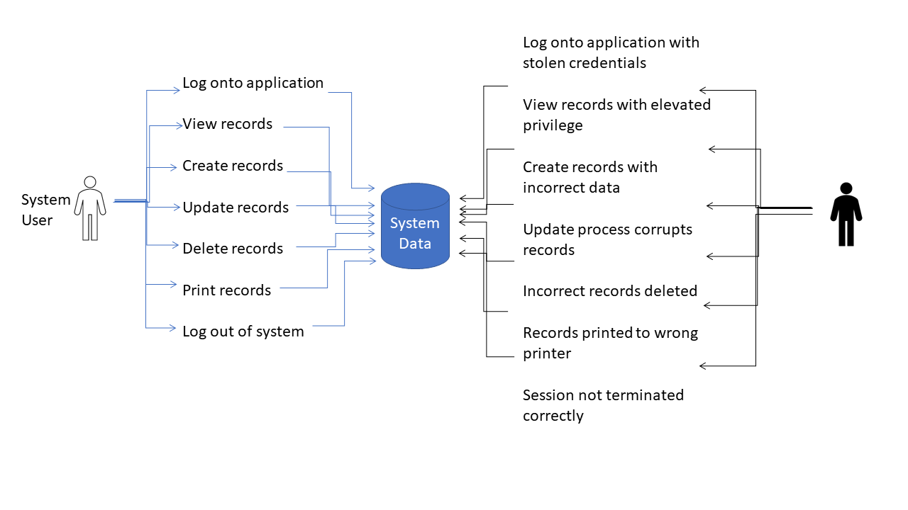
Each threat can be categorized in an appropriate STRIDE Threat Categorization:
- Spoofing : An attacker poses as a different entity.
- Tampering : Data or code is maliciously modified.
- Repudiation : An entity denies having performed an action.
- Information Disclosure : Data or code is revealed to an inappropriate entity.
- Denial of Service : A valid entity is prevented from accessing an application or system.
- Elevation of Privilege : An entity is allowed to execute code or access data at a privilege level above the entity.
The threats from the abuse case was categorized along with mitigations to give an overall threat profile of the abuse case.
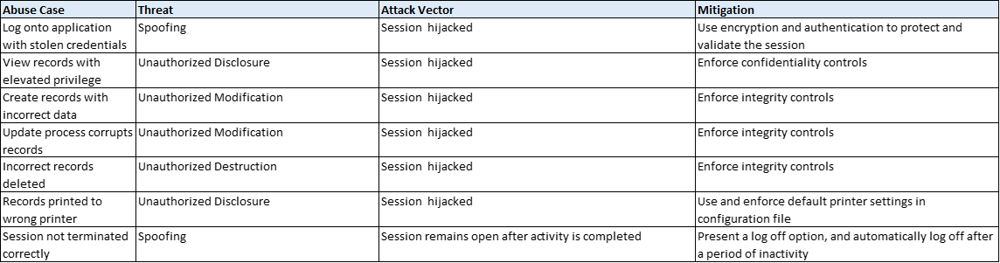
Using the User 1 Security requirment function diagram as a use case, an alternative abuse case diagram was created to demostrate the inclusion of a bad actor.
Threat Modeling
While security mechanisms such as firewalls and intrusion detection systems work great at providing protection at the network layer,
there are threats and vulnerabilities at the application layer that cannot be stopped or detected by these solutions alone.
Threat modeling is a key process that organizations build into the Software Development Lifecycle.
Threat modelling evaluates information that affects the security of an application and organizes it into a structured representation
in order to define effective countermeasures to appropriately mitigate and/or thwart threats from affecting the application.
The objective of threat modeling is to optimize application security by analyzing potential threats, identifying countermeasures,
and reducing fielded vulnerabilities. Organizations can use this data to structure the development of applications to meet security
objectives and reduce risk.
Open the tool and select Create A Model to start.
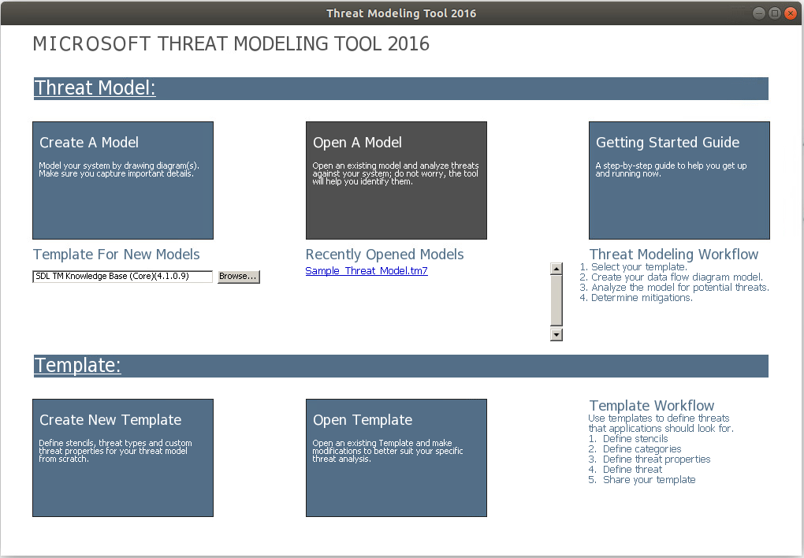
Using the concepts mentioned below, a threat model of the previous use case was created.
-
External Entities : Document external entities acting upon the application and outside the control of the application.
This includes entities like system users and external processes.
- Processes : Processes are a logical representation that perform a discrete task or activity.
-
Data Stores : Document data stores which are persistent data storage.
This includes stores like configuration files, document files, and databases.
-
Data Flows : Document Data Flows which are the means by which data moves throughout the system.
This includes flows such as search string, IP Header, and user confirmation.
-
Boundaries : Document Trust/Privilege Boundaries, which identify where information or process control passes between
areas of different trust levels, systems, physical locations, or address spaces.
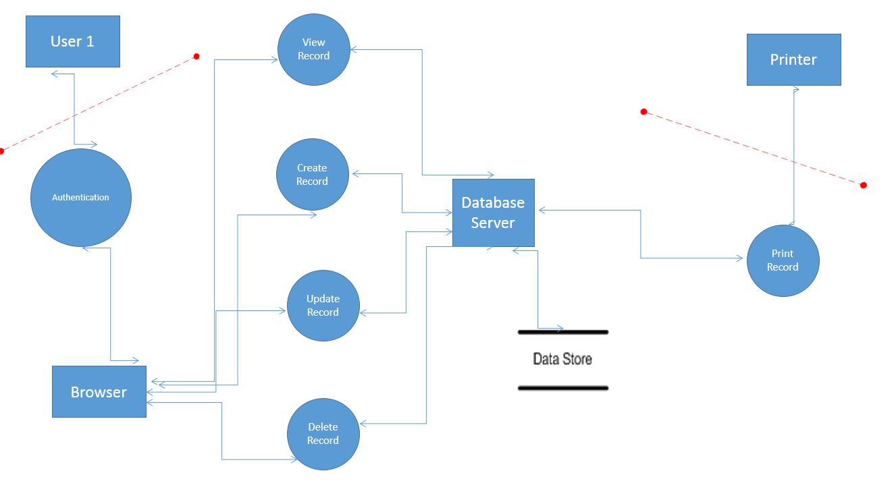
A risk calculation was done to quantify each threat in addition to other parts of the threat model. Damage Potential and Chance of Attack
were judged on a scale of 1 (minimum) to 5 (maximum). Priority (Risk) was determined with the below formula, with higher
values determining higher priority.
Risk = Damage Potential x Chance of Attack
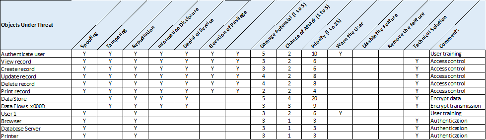
For every threat identified, there are several potential solution categories from which to choose:
- Warn the user : Leave the threat unmitigated, but warn the user.
- Disable the feature : Disable the feature or component.
- Remove the feature : Remove the feature rather than putting users at risk.
- Technological solution : Choose a solution that will mitigate each threat identified.